- 18 setLa mappa boschi al Sud: da oggi anche in Abruzzo, Puglia, Basilicata e Sicilia, tredici regioni in tutto.
- 16 setLa mappa boschi: faggete, castagneti, querceti e abetaie colorati sulla mappa, per ora in nove regioni.
- 13 setDurata e punta nella scheda del pluviometro: tocca una barra del grafico e vedi in quante ore è caduta la pioggia di quel giorno.
- 13 setDove ha piovuto, zona per zona: la pioggia di ieri, degli ultimi 7 e 30 giorni in Garfagnana, Val Trebbia, Sila e altre centoundici zone.
- 12 setQuanto forte è piovuto: per ogni giornata di pioggia forte, in quante ore è caduta e la punta in un'ora.
- 9 setIl nuovo indice «Piogge per funghi», con la classifica delle località più bagnate d'Italia.
- 3 setLe pagine di zona: Garfagnana, Val Trebbia, Sila e altre centodieci, ognuna coi suoi pluviometri.
- 2 setLe pagine di paese: oltre novecento schede con l'archivio del pluviometro più vicino.
- 31 agoLa diretta radar: la pioggia in corso, le ultime due ore e i quaranta minuti seguenti.
1Il video, in sintesi
Sul canale c'è una breve guida sintetica: due minuti, il giro veloce dei tasti principali. Serve a partire.
Questa pagina invece è la guida completa, per un uso approfondito: che cosa misura ogni strumento, come si leggono i colori e i numeri, che cosa cercare quando la ricerca dei funghi si fa seria, e dove il sito dichiara i propri limiti. Si legge a pezzi, con l'indice qui accanto.
2Che cosa mostra il sito
Questo sito mostra la pioggia già caduta, misurata da oltre 5.700 pluviometri delle reti pubbliche di monitoraggio in Italia, Svizzera, Austria, Francia e Slovenia. Non è un sito di previsioni: non troverai che tempo farà domani, ma quanti millimetri sono caduti in un punto preciso nei giorni scorsi.
Un pluviometro è uno strumento a terra, di un'agenzia regionale o nazionale, che raccoglie la pioggia e la misura. Ogni pallino sulla mappa è uno di questi strumenti, e il numero che compare toccandolo è la sua misura. Le fonti, agenzia per agenzia, sono elencate in Fonti e licenze.
Il sito è gratuito, senza pubblicità e senza registrazione.
3In tre passi
- Dì dove. Scegli una regione, oppure scrivi il nome del tuo paese nella casella Cerca località. Dal telefono puoi anche toccare La mia posizione.
- Dì quando. Tocca un periodo: Ieri, 7 giorni, fino a 30 giorni. Oppure Date personalizzate per un intervallo tuo.
- Leggi. La mappa si colora e i pallini prendono i loro valori. Tocca un pallino per vedere la misura di quel pluviometro e il suo archivio giorno per giorno.
Se tocchi un periodo senza aver scelto dove, il sito te lo dice: «Seleziona prima una regione».
4Scegliere dove guardare
Ci sono tre modi, e stanno tutti nello stesso pannello: quello che sul telefono si apre con Tocca qui per scegliere la regione.
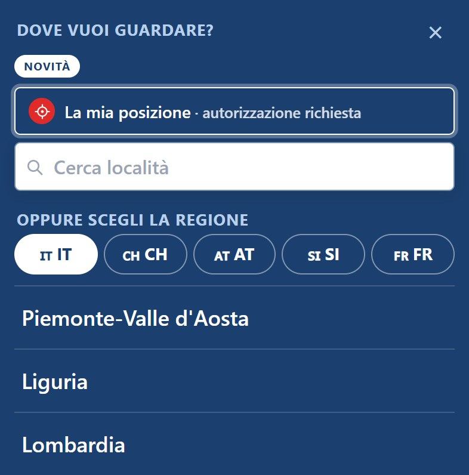
La regione
Da computer le regioni sono caselle da spuntare, e puoi tenerne fino a tre insieme: utile quando il bosco che ti interessa sta a cavallo di un confine, per esempio Liguria ed Emilia sull'Appennino. Puoi anche cliccarle direttamente sulla mappa, e ↩ Indietro ripulisce la selezione.
Dal telefono si sceglie una regione per volta, perché tre regioni su uno schermo stretto non si leggono. La voce Francia (FR) ▸ apre l'elenco delle tredici régions francesi.
La casella «Cerca località»
Scrivi il nome del paese, della frazione o del rifugio e scegli dalla tendina: la mappa ci va e accende da sola la regione giusta. Servono almeno tre lettere, perché con due i nomi possibili sono centinaia. Funziona anche con le località di Svizzera, Austria, Francia e Slovenia.
«La mia posizione»
Solo dal telefono, dove ha senso. Tocchi il tasto, il telefono chiede il permesso e, se il GPS lo consente, la mappa ti porta dove sei con la regione già accesa. Se il permesso è stato negato il tasto te lo dice, e si riattiva dalle impostazioni del telefono per questo sito.
La posizione resta sul tuo telefono: non viene salvata e non viaggia nei link che condividi.
5Scegliere il periodo
Il pannello del periodo somma la pioggia dei giorni che scegli. I tasti pronti sono sei, più le date libere.
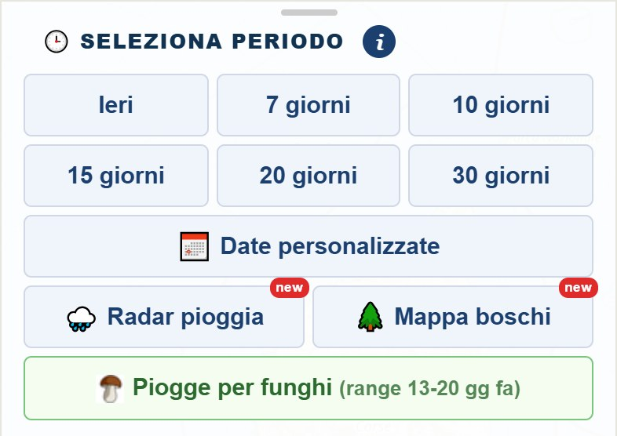
| Tasto | Che cosa somma |
|---|---|
| Ieri | il solo giorno di ieri |
| 7 giorni | gli ultimi sette giorni |
| 10 e 15 giorni | dieci o quindici giorni |
| 20 e 30 giorni | venti o trenta giorni |
| Date personalizzate | l'intervallo che scrivi tu |
La giornata di oggi è sempre esclusa, e c'è scritto sul pannello. Non è una dimenticanza: il giorno in corso è per definizione incompleto, le agenzie lo chiudono e lo consolidano dopo, e mostrarlo vorrebbe dire dare un numero che entro sera sarà sbagliato per difetto. Per la pioggia in corso c'è la diretta radar.
Con le date libere si va indietro quanto è lungo l'archivio di quella regione, e l'archivio lo stiamo ancora costruendo. Oggi al nord e all'estero copre circa un anno, al centro e al sud pochi mesi, perché lì la raccolta è cominciata più tardi. Cresce di un giorno al giorno.
6Il tasto «Piogge per funghi»
È il tasto più usato del sito, e non fa niente di magico: somma la pioggia caduta da 13 a 20 giorni fa, cioè otto giorni di accumulo in una finestra che sta nel passato.
Il motivo è che un fungo non nasce il giorno della pioggia. Fra l'acqua che bagna il terreno e il fungo che si vede passano, per i porcini e in condizioni normali, da 13 a 20 giorni. La domanda utile quindi non è «dove ha piovuto ieri» ma «dove aveva piovuto quando serviva», e quella finestra la trovi con un tocco.
Se vuoi la stessa cosa già ordinata, senza toccare niente, ci sono le pagine Piogge per funghi: la classifica delle località più bagnate in quella finestra, per tutta l'Italia e regione per regione.
7Leggere la mappa
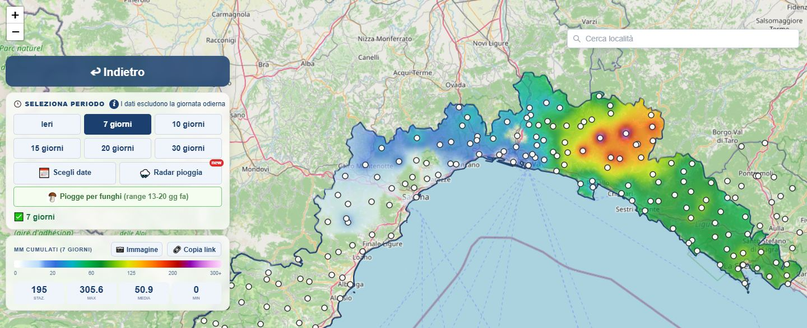
I pallini sono misure
Ogni pallino è un pluviometro vero, alle sue coordinate, e il numero che compare toccandolo è quello che ha misurato nel periodo scelto. Se due pallini vicini dicono numeri molto diversi non è un errore: un temporale estivo può scaricare quaranta millimetri su un versante e due chilometri più in là lasciare il terreno asciutto. È proprio questo che una rete di strumenti fa vedere e una previsione no.
Il colore fra un pallino e l'altro è un calcolo
La sfumatura non è misurata: è ricavata dai pluviometri vicini, dando più peso a quelli più prossimi. Dove la rete è fitta il colore è affidabile, dove è rada, per esempio in alta montagna, è un'indicazione e niente di più. Se un numero ti interessa davvero, guarda il pallino, non il colore.
Millimetri cumulati sul periodo scelto. La scala non cambia mai, così venti millimetri hanno sempre lo stesso colore e due analisi si confrontano a occhio.
I quattro numeri
Sotto la scala ci sono Staz., cioè quanti pluviometri hanno dato un dato in quel periodo, più Max, Media e Min. La media va presa con le pinze: in una regione che va dal mare a tremila metri, la media fra un pluviometro di pianura e uno di cresta non descrive nessuno dei due.
Se i pallini sembrano meno del dovuto
A mappa larga si diradano, perché oltre un certo numero si sovrappongono e diventano una macchia illeggibile. Ingrandendo compaiono tutti, e il numero in legenda è sempre quello vero. Lo zoom si muove a tacche piccole, così si inquadra una valle senza passare dal troppo largo al troppo stretto.
8La scheda del pluviometro
Toccando un pallino si apre la sua scheda: nome, millimetri del periodo, comune, quota e ranking, cioè che posto occupa fra i pluviometri di quell'analisi. #22 / 195 vuol dire ventiduesimo su centonovantacinque.
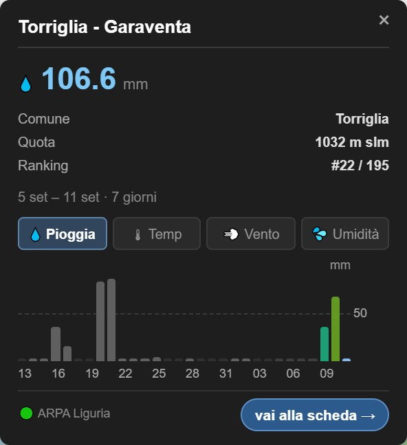
Sotto ci sono quattro schede, tutte su dati reali di quella stazione e giorno per giorno: 💧 Pioggia, 🌡 Temp, 💨 Vento e 💦 Umidità. La prossima sezione spiega che cosa dicono e perché contano.
Non tutte le stazioni hanno tutti gli strumenti: un pluviometro puro misura solo la pioggia, e in quel caso la scheda lo dice invece di disegnare una linea inventata.
Quando quel pluviometro ha una pagina tutta sua, in fondo alla scheda compare vai alla scheda →. Che cosa c'è in quella pagina sta poco più avanti.
9Che cosa misura, e perché conta
Il sito nasce per la pioggia, ma le stesse stazioni misurano anche altro, e nei file salviamo tutto quello che pubblicano. Non è collezionismo: nel bosco quei numeri cambiano la lettura della stessa pioggia.
💧 La pioggia, in millimetri
Un millimetro è un litro d'acqua per metro quadrato. È la misura base, quella dei pallini e dei colori. Per dare un'idea: sotto i 10 mm in una finestra di otto giorni il terreno del bosco resta asciutto sotto la superficie, fra i 20 e i 40 comincia a essere una pioggia che conta, oltre i 50-60 è un evento che di solito basta a innescare, se la temperatura accompagna.
⏱ L'intensità: in quante ore
Cinquanta millimetri in un pomeriggio e cinquanta distribuiti su sei giorni sono due storie diverse, e per il terreno la seconda è molto migliore. Dal 10 settembre 2026, per ogni giornata di pioggia, contiamo le ore in cui ha piovuto e la punta caduta in un'ora. Dividendo i millimetri per le ore si ottiene il ritmo, e lo traduciamo in una parola.
| Millimetri all'ora | Come la chiamiamo | Nel bosco |
|---|---|---|
| fino a 2 | pioggia lenta | il terreno assorbe tutto, è l'acqua che serve |
| da 2 a 6 | pioggia media | bagna bene e in profondità |
| oltre 6 | pioggia battente | molta acqua corre via in superficie: nei millimetri si vede, nel terreno meno |
Le due soglie sono quelle della convenzione meteorologica italiana.
Dove la trovi. Nella scheda del pluviometro, sotto il grafico della pioggia, c'è il giorno più piovoso del periodo con le sue ore e la sua punta. Tocca un'altra barra e la riga passa a quel giorno. Col periodo Ieri durata e punta stanno direttamente fra le righe in alto.
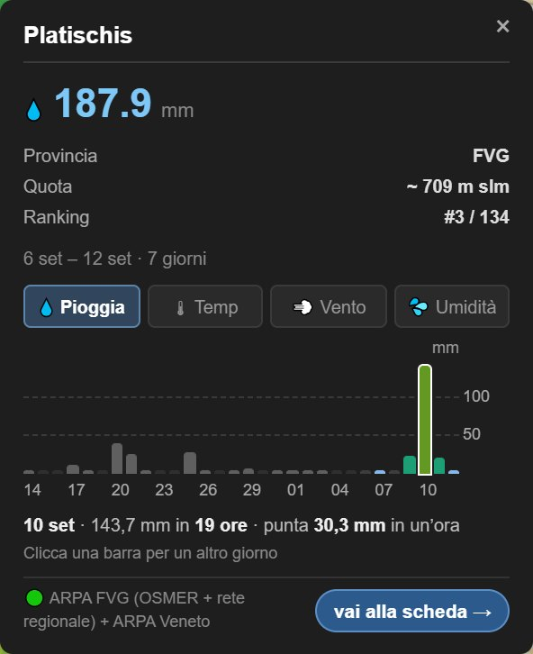
Le stesse due informazioni ci sono sotto il grafico delle pagine di paese, e lì la giornata di pioggia più forte ha anche la parola: «Sono caduti in 19 ore, con una punta di 30,3 mm in un'ora: 7,6 mm all'ora, pioggia battente».
Le ore le pubblicano Piemonte, Liguria, Lombardia, Friuli, le reti del centro-sud, Svizzera, Austria, Francia e Slovenia. Toscana, Emilia, Veneto, Trentino e Alto Adige danno solo il totale del giorno: lì la riga non compare.
🌡 La temperatura, minima e massima
È il secondo interruttore dopo la pioggia. Dopo una pioggia buona, quello che decide se e quando nasce qualcosa sono le notti: minime che restano sopra i 10 gradi tengono il bosco in moto, minime vicine allo zero lo fermano. In quota la stessa pioggia di agosto e quella di ottobre danno esiti diversi solo per questo. Il grafico della scheda mostra minima e massima giorno per giorno, e serve proprio a guardare l'andamento delle notti nei giorni dopo la pioggia.
💨 Il vento
Il vento asciuga. Una giornata ventosa dopo la pioggia toglie umidità alla lettiera molto più in fretta di una giornata ferma, e su un versante esposto la finestra utile si accorcia. Nel grafico c'è la velocità media del giorno, e nel dettaglio di ogni giornata anche la raffica. È anche il modo per riconoscere i giorni di burrasca in una serie.
💦 L'umidità dell'aria
Dice quanto il bosco sta restituendo l'acqua che ha preso. Dopo una pioggia, giorni con umidità alta, specie di notte, vogliono dire terreno che resta umido; aria secca e vento insieme sono la combinazione che asciuga tutto in due giorni. È l'umidità dell'aria misurata dalla stazione, non quella del terreno: quella nelle reti pubbliche non esiste, esistono solo modelli, e i modelli qui non li usiamo.
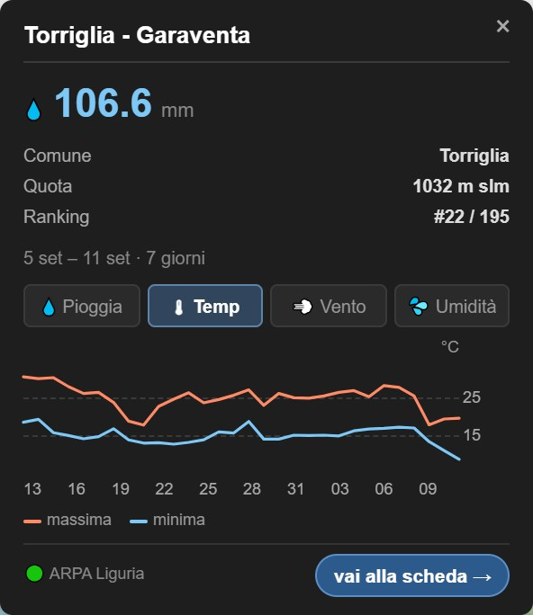
🌡 Temperatura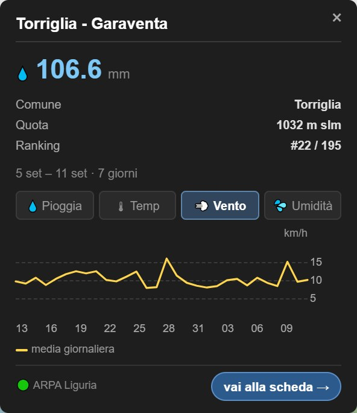
💨 Vento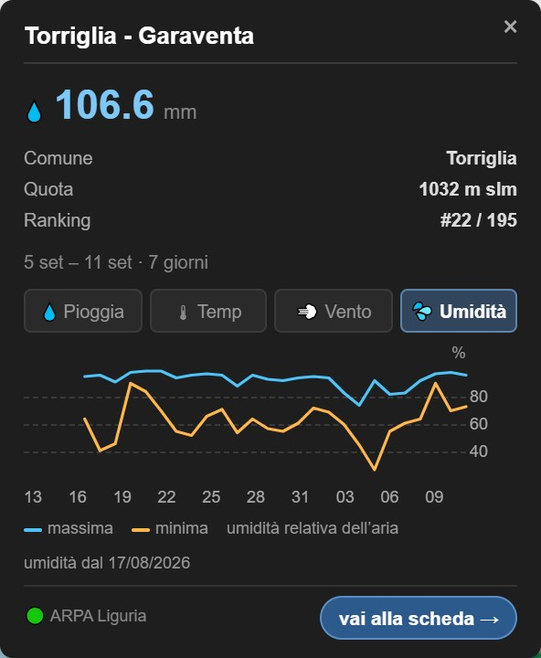
💦 Umidità⛰ La quota
Compare nella scheda perché cambia tutto il resto: la stessa perturbazione lascia numeri diversi a trecento e a milleduecento metri, e la temperatura scende con l'altezza. Quando il pluviometro più vicino al tuo bosco sta molto più in basso, i suoi millimetri sono di solito una sottostima di quello che ha preso il versante. Dove l'ente non dichiara la quota la deduciamo dalla posizione, e in quel caso il numero ha davanti una tilde, per esempio «~ 1.240 m slm».
Come si usano insieme. La pioggia dice se l'acqua c'è stata. L'intensità dice se è entrata nel terreno o è corsa via. Temperatura, vento e umidità dicono se è rimasta lì abbastanza a lungo. Guardati i tre grafici della stessa stazione nei giorni dopo un evento: in mezzo minuto sai se quella pioggia ha ancora valore o se il bosco l'ha già persa.
Che cosa trovi nella scheda del paese
È una pagina dedicata a quel pluviometro e al paese intorno, fatta per rispondere senza dover toccare niente. Dentro c'è:
- quanta acqua è caduta nella finestra dei funghi, col numero grande e le due date esatte, più quando è caduta l'ultima pioggia forte;
- il grafico degli ultimi venticinque giorni, con gli otto giorni della finestra in scuro e gli altri in chiaro: si vede a colpo d'occhio se la pioggia è arrivata al momento giusto o troppo tardi;
- quattro numeri a confronto: la finestra dei funghi, gli ultimi 7 giorni, gli ultimi 25 e quand'è stata l'ultima pioggia sopra i 30 millimetri;
- temperatura e vento dello stesso periodo, e un'anteprima della mappa già inquadrata sul posto;
- il ritratto del posto ricavato da tutto l'archivio: quanti millimetri in quante giornate bagnate, il giorno più bagnato, il mese più piovoso e che posto occupa fra i pluviometri da bosco della sua regione;
- perché quel posto è in elenco: c'è un pluviometro vero, sta fra i 200 e i 1.600 metri e ha almeno il 37% di bosco entro tre chilometri, misurato sulle mappe;
- i link alla zona che lo contiene e a tutte le altre località della regione.
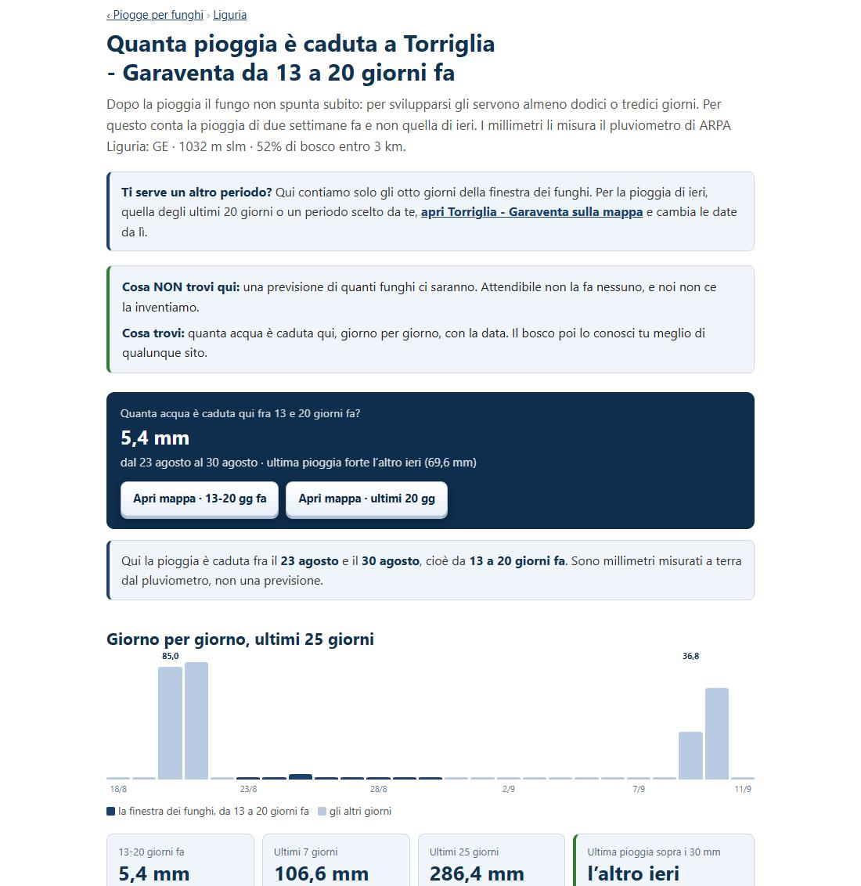
10La diretta radar
Il tasto Radar pioggia cambia modo: la sfumatura dei cumulati si spegne, i pallini spariscono, restano i confini e compare la pioggia in corso adesso. Tre tasti e una linea del tempo: Adesso, ▶ -2 ore per rivedere da dove è arrivata, +40 min per i quaranta minuti seguenti. Si esce col tasto, o semplicemente scegliendo un periodo.
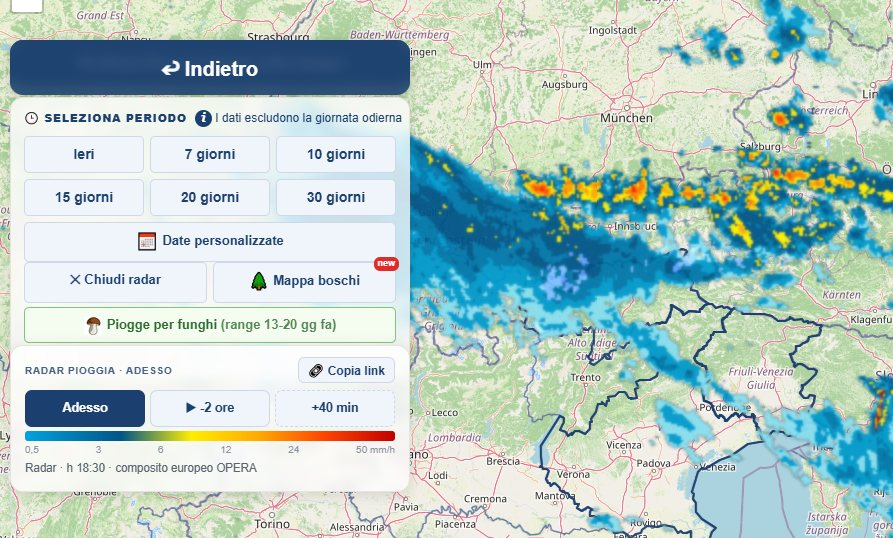
Due avvertenze oneste. La previsione a quaranta minuti è una previsione, dichiarata come tale, e non una misura. E il radar vede la pioggia dall'alto con una risoluzione di due chilometri: dice bene dove sta piovendo, mentre quanto è caduto resta il mestiere dei pluviometri, che restano la fonte di tutto il resto del sito.
La fonte è il composito radar europeo EUMETNET OPERA, 155 radar in 24 paesi, servito dal progetto aperto LibreWXR.
11La mappa boschi
La pioggia dice quando andare, il bosco dice dove: faggete, castagneti, querceti e abetaie non danno gli stessi funghi. Il tasto 🌲 Mappa boschi, accanto a quello del radar, cambia modo: la pioggia e i pallini spariscono, e i boschi si colorano per tipo, in otto gruppi.
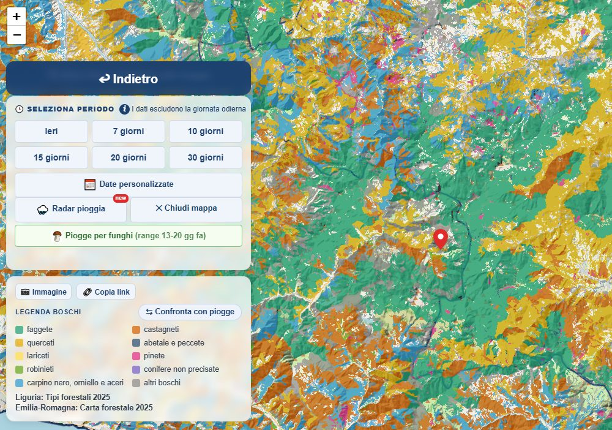
Come si usa
Scegli la regione e tocca il tasto: la mappa inquadra la regione. Se prima hai cercato un paese, si apre sul paese, abbastanza vicina da leggere i versanti. Da lontano i boschi sono una macchia unica: ingrandisci sulla valle che ti interessa. Si esce col tasto stesso, che nel frattempo è diventato ✕ Chiudi mappa, con ↩ Indietro, oppure scegliendo un periodo.
Anche le pagine di paese e di zona delle regioni coperte hanno il tasto Guarda i boschi, che apre la mappa boschi già centrata su quel posto.
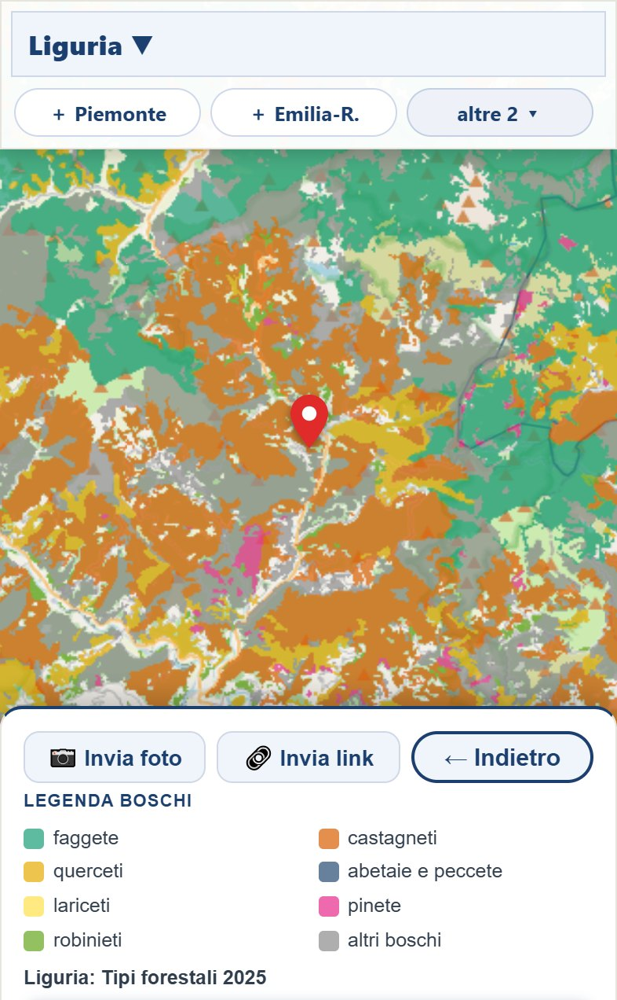
| Colore | Che cosa mette insieme |
|---|---|
| faggete | i boschi di faggio |
| castagneti | i boschi di castagno e le selve da frutto; in Veneto e in Friuli anche i rovereti, perché lì la carta li tiene insieme |
| querceti | roverella, rovere, farnia, cerro, leccio e sughera, e i querco-carpineti |
| abetaie e peccete | abete bianco e abete rosso |
| lariceti | larice e larice con cembro |
| pinete | pino silvestre, nero, marittimo, domestico e d'Aleppo |
| robinieti | i boschi di robinia |
| altri boschi | tutto il resto: carpino nero e orniello, latifoglie miste, ontani e salici lungo i fiumi, mughete d'alta quota, e arbusteti e macchia dove la carta li conta |
Quanto è precisa
I disegni sono quelli delle carte forestali delle Regioni, fatte sulle foto aeree con un dettaglio che arriva al singolo versante. Ogni Regione però usa le sue categorie, che abbiamo raggruppato noi negli otto colori. Un colore dice un albero: «pinete» sono solo i boschi di pini, «abetaie e peccete» solo quelli di abeti e pecci. Dove la carta dice soltanto «conifere», senza la specie, il bosco va in «altri boschi»: meglio un grigio che un albero sbagliato. Le carte poi non hanno tutte la stessa età: si va da quella del Veneto, aggiornata al 2005, a quella della Liguria, del 2025. Quale carta stai guardando lo dice la riga sotto la legenda, e l'elenco completo, con le licenze, sta in Fonti e licenze.
Due avvertenze oneste. Il bosco della carta è quello di quando la carta è stata fatta: un taglio o un incendio recenti non ci sono. E la carta dice che bosco c'è, non se ci sono i funghi: per quello servono la pioggia al momento giusto, la temperatura e un giro a piedi.
12Condividere
In alto nel pannello della legenda ci sono due tasti. Da computer si chiamano 🔗 Copia link e 📷 Immagine, dal telefono 🔗 Invia link e 📷 Invia foto, perché lì passano dal menu di condivisione.
- Il link porta con sé regioni, date, zoom e centro: chi lo apre vede esattamente la tua vista, anche se tu eri al computer e lui è al telefono.
- L'immagine è uno scatto della mappa come la stai vedendo. In fondo ha una striscia con l'indirizzo del sito e il periodo, perché una foto che gira nei gruppi senza date, dopo una settimana, non vuol dire più niente.
Se hai ingrandito su una valle, lo scatto tiene la tua inquadratura. Se non hai toccato lo zoom, il sito allarga quanto serve a far entrare tutta la regione.
13Le pagine del sito
Oltre alla mappa ci sono più di mille pagine, per chi vuole la risposta già scritta invece di cercarla.
- Pagina di regione, per esempio Dove ha piovuto in Liguria: tutta la pioggia della regione, pianura compresa, con ieri, gli ultimi 7, 20 e 30 giorni, i posti più bagnati e l'elenco delle sue zone.
- Pagina «Dove ha piovuto» di zona, per esempio Garfagnana: la pioggia di ieri, degli ultimi 7 e 30 giorni in una valle sola, pluviometro per pluviometro.
Poi ci sono le pagine per chi va a funghi. Contano la pioggia da 13 a 20 giorni fa, nei soli posti da bosco:
- Pagina «Piogge per funghi» di regione, per esempio Liguria: in cima le zone della regione, dalla più bagnata.
- Pagina di zona, per esempio Funghi in Garfagnana: Garfagnana, Val Trebbia, Sila, Cansiglio e altre centodieci, ognuna coi pluviometri che le stanno dentro.
- Pagina di paese: la scheda del pluviometro più vicino, con l'archivio, quanto è piovuto nella finestra, da quanti giorni non piove e il ritratto del posto. Ci si arriva dalla mappa con vai alla scheda →, o cercando il nome del paese su Google.
- L'indice Piogge per funghi: la porta su tutte, con la classifica nazionale delle località più bagnate in questo momento.
Da novembre a marzo, sotto il titolo delle pagine funghi, un avviso ricorda che si è ai margini o fuori stagione.
Le pagine sono gusci fissi e i numeri li scaricano al momento: quello che leggi è sempre aggiornato a ieri.
14Nove consigli
- Parti dal tuo paese, non dalla regione. Scrivi il nome nella casella di ricerca: arrivi già inquadrato, e di lì allarghi.
- Guarda il pallino, non la macchia di colore. Il colore è calcolato, il pallino è misurato.
- Tocca il pluviometro più vicino al bosco, non quello del paese, e guarda la sua quota. Fra il fondovalle e i mille metri, con lo stesso temporale, i millimetri cambiano molto.
- Apri sempre il grafico della pioggia. Cinquanta millimetri in un pomeriggio e cinquanta in sei giorni sono due storie diverse.
- Dopo la pioggia guarda le minime. Notti sopra i dieci gradi tengono il bosco in moto, notti fredde lo fermano.
- Confronta due periodi. Prima 7 giorni poi 30 giorni: capisci subito se quella pioggia è un episodio o la coda di un mese piovoso.
- Per i funghi usa il tasto dedicato, non «Ieri». La pioggia che conta è quella di due settimane prima.
- Ingrandisci prima di dire che un pluviometro manca. A mappa larga i pallini si diradano per non sovrapporsi.
- Se mandi la mappa a qualcuno, manda il link, non lo screenshot: lui può muoverla, cambiare periodo e guardarsi il suo pluviometro.
15Domande frequenti
Sono previsioni?
No. Tutto quello che vedi è pioggia già caduta e misurata da strumenti a terra. L'unica eccezione è la previsione a quaranta minuti della diretta radar, che è dichiarata come tale.
Perché non c'è la pioggia di oggi?
Perché la giornata non è finita e le agenzie la consolidano dopo. Mostrarla vorrebbe dire dare un numero che entro sera sarà sbagliato per difetto. Per la pioggia in corso c'è la diretta radar.
Quanto indietro posso andare?
Quanto è lungo l'archivio di quella regione: circa un anno al nord e all'estero, pochi mesi al centro e al sud, dove la raccolta è cominciata più tardi. Cresce di un giorno al giorno.
Due pluviometri vicini dicono numeri molto diversi. È un errore?
Quasi sempre no, è la realtà dei temporali: sono fenomeni piccoli, e un versante può prendere tutto mentre quello accanto resta asciutto.
Il colore dice quaranta e il pallino dodici. Chi ha ragione?
Il pallino. Il colore fra i pluviometri è ricavato da quelli intorno, e dove la rete è rada sbaglia. Fidati sempre della misura.
Perché il mio pluviometro non c'è?
Tre possibilità: la mappa è troppo larga e i pallini sono diradati, quindi ingrandisci; lo strumento non ha pubblicato abbastanza giorni in quel periodo, e allora resta fuori; oppure quella rete non pubblica dati aperti e non ce l'abbiamo. Nel dubbio scrivici col nome del posto.
Perché nella mia regione la mappa boschi non c'è?
Perché quella Regione non pubblica una carta dei tipi di bosco abbastanza precisa, o non l'abbiamo ancora aggiunta. Per ora le regioni sono ventuno, elencate nella sezione della mappa boschi; le altre entrano una alla volta.
Ogni quanto si aggiorna?
I dati vengono raccolti più volte al giorno, con poche richieste e distanziate, per non pesare sui server delle agenzie. Quello che vedi arriva fino a ieri.
Posso usare le immagini e i dati?
Le immagini della mappa sì, citando il sito: la striscia in fondo allo scatto lo fa già. I dati appartengono alle agenzie, che ne sono le uniche titolari, e le licenze stanno in Fonti e licenze.
Il sito è gratuito? Ci sono pubblicità?
È gratuito, senza pubblicità, senza registrazione e senza newsletter. Se ti è utile, il modo di dire grazie è iscriverti al canale.
Questo è un sito ufficiale di qualche ente?
No. È un progetto indipendente, senza nessun rapporto con le agenzie di cui usa i dati aperti. Le fonti sono sempre citate, e le richieste degli enti titolari hanno la precedenza su tutto.
Mi garantisce che trovo i funghi?
No, e nessuno può. Il sito dice dove è piovuto e quando. Temperatura, quota, bosco, terreno e fortuna restano fuori.
16Avvisi, ritardi e limiti
Il sito dichiara i propri limiti nel punto in cui contano, cioè addosso ai numeri. Se vedi una scritta rossa nel pannello, è una di queste.
Le stime
Quasi tutto quello che vedi è misurato. Restano due casi in cui il valore è una stima da modello, e sono sempre marcati come tali: l'archivio più vecchio di quando abbiamo cominciato a raccogliere una certa rete, e i rari giorni in cui l'agenzia non ha pubblicato. Una stima non viene mai spacciata per misura. L'Abruzzo per ora è tutto così, perché una fonte di stazione aperta non l'abbiamo ancora trovata, e c'è scritto.
I ritardi
Le agenzie chiudono e consolidano i dati con tempi diversi: il Friuli può arrivare fino a 48 ore dopo, la Slovenia ha un ritardo dichiarato di 36 ore, qualche rete del centro-sud pubblica a giorni alterni. Quando un periodo cade dentro un ritardo il sito lo scrive invece di mostrare uno zero, perché «non pubblicato» non vuol dire «non è piovuto».
I pluviometri fermi e i pallini che mancano
Uno strumento può guastarsi, e allora smette di pubblicare o pubblica zero. Un controllo automatico lo cerca ogni settimana. E se un pluviometro ha dato un dato per meno del 60% dei giorni del periodo scelto, il suo pallino non partecipa: sommare quattro giorni su trenta e chiamarli «trenta giorni» sarebbe un numero falso, più basso del vero.
Quando fa fede l'agenzia
I valori possono differire da quelli pubblicati dall'agenzia per orari di consolidamento diversi o per correzioni successive alla fonte. In caso di differenza fa fede il dato dell'agenzia titolare. Se ne trovi uno che non torna, scrivici: le segnalazioni sugli errori sono la cosa più utile che ci puoi dare.
17Mappa del sito
Ogni regione ha due pagine: una con tutta la pioggia, pianura compresa, e una con i soli posti da bosco, nella finestra da 13 a 20 giorni fa che serve per i funghi.
Dove ha piovuto: tutti i pluviometri, pianura compresa
Lombardia · Piemonte · Valle d'Aosta · Liguria · Emilia-Romagna · Veneto · Friuli · Trentino · Alto Adige · Toscana · Umbria · Marche · Lazio · Molise · Campania · Puglia · Basilicata · Calabria · Sicilia · Sardegna · Svizzera · Austria · Slovenia
🍄 Dove potrebbero esserci le prime nascite di funghi
La nostra selezione, le località più bagnate · Lombardia · Piemonte · Valle d'Aosta · Liguria · Emilia-Romagna · Veneto · Friuli · Trentino · Alto Adige · Toscana · Umbria · Marche · Lazio · Campania · Puglia · Basilicata · Calabria · Sicilia · Sardegna
Non hai trovato la risposta? Scrivici a avventuremicologiche@gmail.com, oppure guarda Fonti e licenze. Torna alla mappa dei pluviometri.
Dati © delle rispettive agenzie ed enti. Questo sito li aggrega e li visualizza citando la fonte, senza fini di lucro.